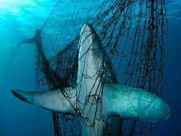
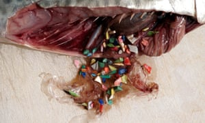

Envirmental Effects
Where do think are trash goes? To are trash cans, landfills, or the floor? What about
the ocean. Our trash has been interfering with sea life and harming/ killing them for
too long there needs to be a change soon. There are many ways we pollute the ocean and
may be harmful to us. Our harmful preservatives and deadly chemicals from farms and produce
run down river and into the ocean which create toxic dead zones that kill the habitat. Heavy
metals and other contaminants that we put in the ocean can go in to the fish we eat which
makes it dangerous to eat seafood. When plastic breaks down it turns into tiny parts called
micro plastics. These micro plastics get eaten up tiny animals and as it moves up the food
chain it gets into the food we eat. The micro plastics have toxic chemicals that we eat.
These deadly contaminants could even cause us cancer.
Learn more



